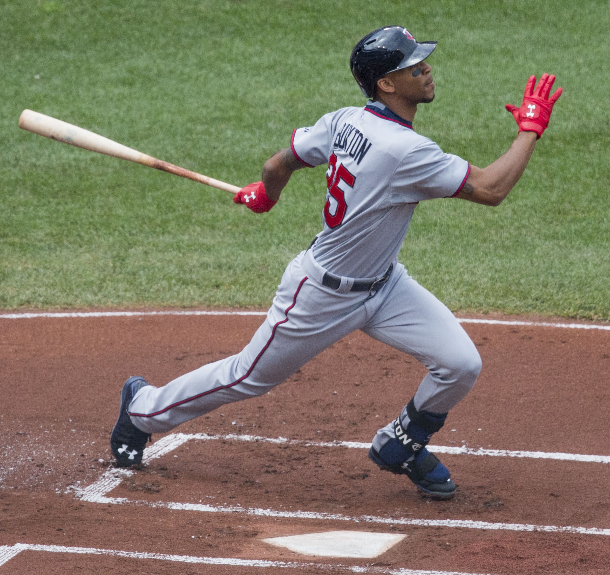
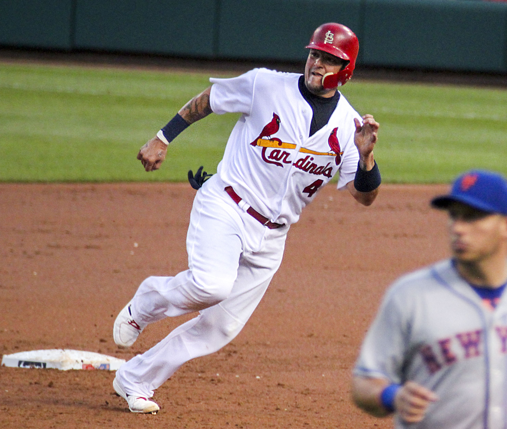
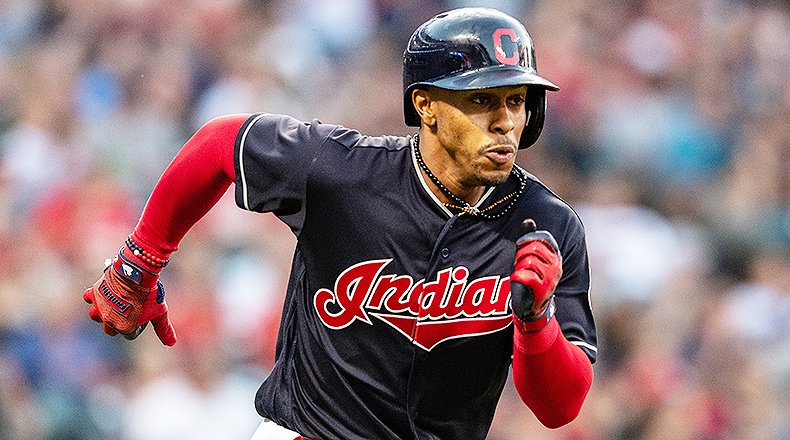
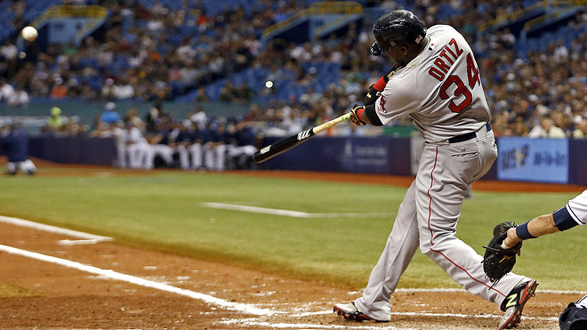

Major League Baseball Rules
The object of baseball is to score more runs than your opponent. The idea is to hit the ball thrown at you as far as you can before running around 4 bases to complete a run. Once a player manages to get around the four bases before being tagged out, then another batter steps in.
 A game is played out between two teams, each made up of 9 players. The game lasts for 9 innings with each team alternating between batting and fielding in each inning. The scores at the end of the innings are added to a cumulative score and the team with most points wins. Each team has three outs per inning before they then swap roles. Each inning can be broken down into the top (where the away team bats), and the bottom (where the home team bats).
 The field is split into two sections: infield and outfield. Separating the infield and outfield is a diamond shape with four bases, spaced at 90 feet apart each. In the center of the infield is the pitching mound where the pitcher stands and throws the ball toward the batter. The batter stands at the home plate. The other three bases are known as first base, second base and third base. The batter must touch all bases before successfully scoring a run.